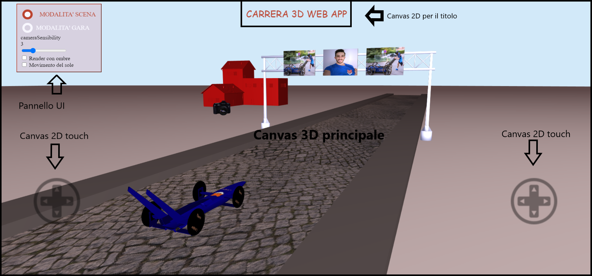
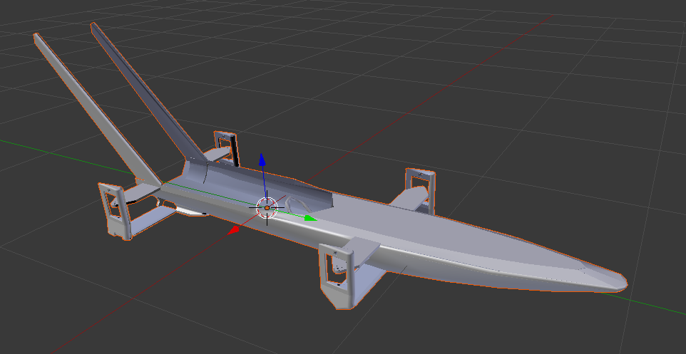
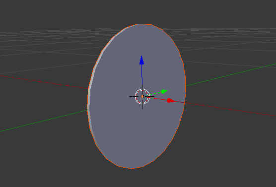
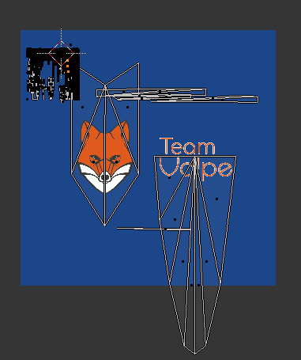
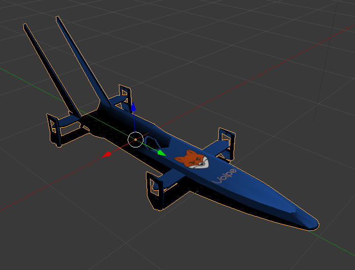
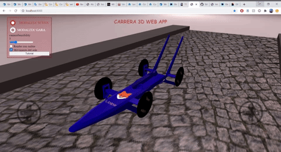
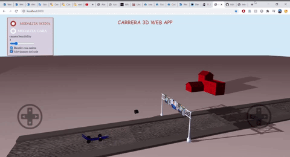
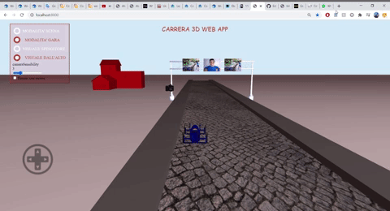

Progetto di Fondamenti di Computer Graphics
Lorenzo Piazza
Introduzione
Descrizione
In questo progetto ho sviluppato una Web Application di grafica 3D a tema Carrera Autopodistica.
La Carrera Autopodistica è una competizione che prende luogo nel mese di settembre per le vie cittadine di Castel San Pietro Terme (BO), città in cui vivo.
Le macchinine che gareggiano sono dette carrere e sono veicoli senza motore, a spinta umana. Per ogni carrera l’equipaggio è composto da un pilota più quattro spingitori che si danno il cambio nella spinta della macchina realizzando una staffetta. Protagonista della scena dell’applicazione che ho sviluppato è la carrera del Team Volpe, squadra in cui corro.
Avvio dell’applicazione e suo utilizzo
Prima di avviare l’applicazione è necessario lanciare un server locale che permetta il corretto recupero di risorse esterne (quali immagini, file .obj …).
- Aprire una shell nella cartella
/project. - Digitare il comando
python -m http.server 8000 - Aprire una pagina browser all’indirizzo
localhost:8000
Una volta avviata, l’applicazione si presenta composta da quattro elementi principali:
- mainCanvas: è il riquadro principale. È un oggetto canvas con contesto webGL che realizza la grafica 3D dell’applicazione. Tramite CSS è stato portato in background in modo che possa stare a tutto schermo senza coprire gli altri elementi.
- textCanvas: è un oggetto Canvas con contesto 2D che realizza il titolo dell’applicazione.
- touchCanvas1 e touchCanvas2: sono due oggetti canvas con contesto 2D su cui viene disegnata l’immagine di un gamepad e che possono essere usati nei dispositivi touch, per sopperire alla mancanza di mouse e tastiera.
- pannello UI: è un oggetto div che funge da menù dell’applicazione.

L’applicazione presenta due differenti modalità d’uso, che possono essere scelte mediante il pannello UI in alto a sinistra.
- Modalità scena: In questa modalità l’utente è libero di navigare la scena per osservarne la composizione e i dettagli.
La navigazione nella scena è realizzata mediante opportuni movimenti della camera. Per maggiori dettagli si veda la sezione Movimento della Camera.
La camera può essere:- spostata avanti/indietro/destra/sinistra: tasti
AWSDda tastiera oppuretouchCanvas1in basso a sinistra. - spostata in alto/basso: tasti
UP/DOWN ARROWda tastiera. - ruotata: tasti
LEFT/RIGHT ARROW+NUM8/NUM5da tastiera oppuretouchCanvas2in basso a destra.
- spostata avanti/indietro/destra/sinistra: tasti
- Modalità gara: In questa modalità l’utente può pilotare la carrera e muoverla all’interno della scena.
Sono disponibili due differenti inquadrature: visuale spingitore e visuale dall’alto che settano diverse posizioni iniziali della camera.
In modalità gara poi, è possibile simulare il cosiddetto lancio della carrera, ossia il gesto compiuto dallo spingitore per permettere il cambio della staffettista. Viene quindi realizzato un incremento di accelerazione cui segue una progressiva decelerazione della macchina. In tutto questo la posizione della camera gradualmente si ferma, proprio come lo spingitore che smette di correre avendo terminato la corsa.
È possibile:- pilotare la carrera: tasti
AWSDda tastiera oppuretouchCanvas1in basso a sinistra. - lanciare la carrera: tasto
SPACEBARoppureclick/tapsulla Canvas principale.
- pilotare la carrera: tasti
È possibile infine, tramite il pannello UI, settare alcuni parametri addizionali come la sensibilità di movimento della camera, richiedere il movimento del sole e l’attivazione/disattivazione di tecniche di resa avanzate quali le ombre.
Struttura del progetto
- /project/
-
index.html: è il file html dell’applicazione. Contiene anche del codice Javascript tra cui le funzioni da eseguire all’avvio e la funzione di render. -
shaders.js: è un file al cui interno sono definiti i vari Vertex Shaders e Fragment Shaders usati nell’applicazione. Sono definiti nel linguaggio GLSL e salvati come variabili stringhe.
È presente anche una funzione, initPrograms, che a partire dai sorgenti degli shaders crea i relativi programmi WebGL e si salva i puntatori agli Attribute e Uniform di quel programma. initPrograms verrà invocata nel file index.html.
Sia i programmi che i puntatori sono salvati in oggetti globali chiamati rispettivamenteprogramListe_nomeProgramma_Locs. Così, in ogni punto del codice di progetto ho potuto riferirmi facilmente ad un programma o ad un puntatore ad una sua location. -
/data: è una cartella che contiene i file .obj delle mesh presenti in scena e le immagini texture. -
/resources: è una cartella che contiene i file di script .js.
Alcuni sono le librerie viste all’interno del corso:- glm_light_plus.js (estensione della glm_light.js)
- subdiv.js
- m4.js
- webgl-lessons-ui.js
- webgl-utils.js
Poi vi sono altri file di script che ho realizzato. All’inizio di ciascuno di questi file ho scritto alcune righe di commento a cui rimando per maggiori dettagli sulle loro funzionalità:
- carrera.js: si occupa della fisica della carrera.
- camera-utils.js: gestione del movimento della camera.
- obj-mesh.js: caricamento e disegno di mesh.
- interaction.js: gestione dell’interazione utente.
- shadow.js: gestione delle ombre e funzione di render con ombre.
Infine, sono presenti la libreria j-query per l’utilizzo del modulo Ajax (vedi sezione Mesh) e un file myStyle.css.
-
Mesh
Importazione e disegno
La scena dell’applicazione è composta da diverse Mesh che vengono importate da altrettanti file in formato Wavefront OBJ. Le più complicate (la casa, la fotocamera, il cartello autostradale, la carrera) sono state reperite online mentre quelle più semplici come la strada o il sole le ho create su Blender e poi le ho esportate.
Per importare le mesh nella scena utilizzo la funzione loadMeshObj presente nel file obj-mesh.
Essa sfrutta il modulo JQuery Ajax per accedere in modo asincrono alla risorsa .obj desiderata. Una volta ottenuta, esegue i seguenti 3 passi:
- Lettura e parsing del file obj. [1]
- Creazione di un oggetto Mesh con i dati letti. [2]
- Inserimento dell’oggetto Mesh in un array che conterrà tutte le mesh di scena. [3]
Alcune note a riguardo:
[1] Per rendere possibile una lettura adeguata ho modificato la libreria glm_light.js estendendo la funzione readOBJ perché oltre a leggere e salvare i dati e gli indici relativi alle posizioni dei vertici si salvasse anche i dati e gli indici relativi alle coordinate uv texture e alle normali dei vertici.
[2] Per rendere più pulito e meno ripetitivo il codice ho deciso di definire l’entità Mesh come oggetto e di raggruppare in un costruttore le operazioni comuni a tutti gli oggetti Mesh, come la creazione dei buffer WebGL (createBuffer), il bind e il caricamento in essi dei dati (bufferData).
Questa scelta si è rivelata vantaggiosa ai fini della scrittura del codice in quanto lavorare con l’astrazione dell’oggetto, facilmente distinguibile tramite un campo univoco meshName, ha reso facile settare le sue proprietà in fase di caricamento, come la matrice di posizionamento iniziale, la texture, il materiale, e allo stesso tempo ha permesso di accedervi agilmente quando necessario (ad esempio in fase di disegno).
Ed infatti è stato possibile generalizzare anche la fase di disegno definendo un’unica funzione drawMesh (nelle sue varianti drawLightTextureMesh, drawLightTextureShadowMesh in base al tipo di resa desiderata) da invocare passandole come parametro la mesh da disegnare.
[3] Una volta completati gli import mi ritrovo quindi con un array di oggetti Mesh. Questo array è utile nella funzione di render dove, per ogni mesh in esso contenuta, invoco l’opportuna funzione drawMesh o una sua variante.
Le funzioni relative all’importazione e disegno della mesh le ho raggruppate nel file obj-mesh.js, eccezion fatta per la funzione readOBJ che si trova, come già puntualizzato precedente, nel file glm_light_plus.js.
Utilizzo di Blender 
Quasi tutte le mesh che ho recuperato online si presentavano in posizioni, dimensioni e orientamenti diversi da quelli che desideravo.
Per ridurre le operazioni di trasformazione nel codice della mia applicazione ho importato le mesh originali sul software Blender e ne ho definito la geometria iniziale (centrandole nell’origine degli assi, orientandole nel verso desiderato con delle rotazioni, rimpicciolendole…).
Per alcune mesh ho sfruttato Blender anche in fase di esportazione del nuovo file .obj, in modo da triangolare le facce che in origine si presentavano quadrate. Questo era necessario in quanto WebGL (e più in generale molti algoritmi di CG) lavorano con mesh a faccette piane triangolari.
Blender si è poi rivelato fondamentale nella gestione della mesh Carrera. In origine questa mesh si presentava definita come un unico oggetto fatto da carrozzeria e ruote. Ho usato Blender per suddividerla nelle seguenti 3 mesh:
- carrozzeria.
- ruota Destra.
- ruota Sinistra.
In questo modo mi è stato possibile definire movimenti diversi a seconda dell’esigenza della singola mesh. Le ruote, ad esempio, hanno necessità di ruotare intorno all’asse X, la carrozzeria invece no.
La geometria iniziale delle ruote e anche della carrozzeria è stata definita con centro nell’origine degli assi in modo da poter apportare rotazioni opportune. Questo mi ha permesso di alleggerire le operazioni di render poichè avrei comunque dovuto traslarle nel centro degli assi e lo avrei fatto a livello di codice.
 
Blender è stato molto utile anche per definire il mapping UV delle texture da applicare alle mie mesh ed esportarlo in seguito nel file .obj.
Parlerò di Texture nella prossima sezione.
Texture
Per migliorare l’aspetto della scena ho texturato la maggior parte delle mesh presenti usando un Texture Mapping 2D. Ho texturato la carrera, le ruote, la fotocamera, i pannelli pubblicitari e la strada. Tutte le immagini texture sono state ridimensionate ad una size 2^n x 2^n.
Questo mi ha permesso di applicare la tecnica del Mip Mapping che si è rivelata molto utile nella mia applicazione: in modalità scena, infatti, l’utente può allontanarsi o avvicinarsi ad un oggetto texturato. Questo significa che la texture potrà dover essere resa a schermo con differenti risoluzioni (sempre minori man mano che mi allontano con la camera).
Il mipmap genera una mipmap chain, ossia per ogni texture genera e salva n-1 texture, ciascuna 1/4 di risoluzione della precedente.
Così facendo, in fase di render WebGL potrà scegliere dalla mipmap chain la texture che più si adatta alla risoluzione delle facce da texturare e, se necessario, applicherà la procedura di minification a partire dalla texture scelta e non dalla texture di risoluzione massima. Questo comporta un aumento delle performance (poichè avrò minification più snelle) e un aumento della qualità delle immagine rese.
Il procedimento che ho seguito per applicare il texture Mapping 2D è stato il seguente:
- In fase di init, caricamento delle immagini e creazione della texture:
per svincolarmi dal tempo di caricamento delle immagini e iniziare quanto prima il render della scena, all’inizio definisco e utilizzo una texture di default di colore Blu. Poi, nel momento in cui l’immagine voluta è stata caricata (image.onload), applico il Mip Mapping e la sovrascrivo a quella di default. - Sempre in fase di init, loading delle mesh dai file .obj passando come parametro al costruttore la texture corrispondente.
- In fase di disegno della mesh, controllo se per la mesh corrente è presente una texture:
in caso affermativo, creo l’associazione tra attribute e il buffer con le coordinate texture, attivo una Texture Unit (gl.activeTexture(gl.TEXTURE0)), vi associo la texture desiderata (gl.bindTexture(gl.TEXTURE_2D, item.texture)) e infine associo lo uniform alla Texture Unit attivata.
Dal momento che il colore di un oggetto in scena è condizionato sia dalla texture che dall’illuminazione, ho realizzato un unico programma Shader chiamato lightTextureProgram e ho definito nel suo fragment shader uno Uniform mode.
Descriverò più ampiamente il programma lightTextureProgram nella sezione Illuminazione. Per ora mi limito a dire che grazie a mode mi è stato possibile usare lo stesso programma sia per il render di oggetti texturati che non texturati, distinguendo il calcolo del colore dei primi, che sarà dato da luce + texture, dal calcolo del colore dei secondi, definito invece solo dalla luce.
 
Interazione Utente
Movimento della Camera
L’applicazione permette all’utente di navigare liberamente all’interno della scena muovendosi con la camera.
Tutte le funzioni di movimento e rotazione camera usate per questo fine le ho raccolte nel file camera-utils.js. Esse agiscono modificando le variabili globali camera_pos, target e viewUp, le quali poi saranno usate all’interno della funzione di render per calcolare la matrice di vista.
Per evitare calcoli superflui ho fatto in modo che la matrice di vista venga ricalcolata solo se necessario e questo controllo viene fatto sfruttando una variabile booleana viewParamsChanged che tiene traccia della modifica dei parametri di vista. Questo mi ha permesso di ottenere una funzione di render più efficiente.
È possibile effettuare dei movimenti traslatori (up, down, left e right) in cui viene traslata sia la posizione della camera che quella del target oppure ottenere un effetto di rotazione della visuale (rotateLeft/Right e rotateDown/Up) ruotando rispettivamente attorno agli assi Ye e Xe della camera il target e lasciando fissa la posizione della camera.
E’ stato necessario introdurre una funzione realign() che permettesse di ricalcolare le giuste direzioni degli assi Xe - Ye - Ze della camera in seguito alle rotazioni. Il loro ricalcolo permette di operare delle traslazioni che siano sempre coerenti con l’orientamento attuale della camera, dando all’utente una sensazione di naturalezza nel movimento.
Portabilità su dispositivi touch screen
In un’ottica di portabilità dell’applicazione e di compatibilità con dispositivi touchscreen le varie interazioni utente sono effettuabili sia tramite tastiera e mouse che tramite touch dello schermo.
Per rendere possibile questo sono stati necessari due accorgimenti:
- Sfruttando il contesto Canvas 2D e la sua funzione
drawImageho realizzato le due touchCanvas illustrate dall’immagine nella sezione Introduzione. - Ho associato alle suddette canvas delle funzioni listener sia per gli eventi
mouseDown,mouseMoveemouseUpche per i rispettivitouchStart,touchMoveetouchEnd. Le funzioni listener non fanno altro che calcolare le coordinate canvas del punto che è stato cliccato/toccato e comandare il movimento camera (o carrera) opportuno.
In questo modo l’applicazione risulta fruibile anche su dispositivi privi di tastiera e mouse.
Illuminazione
Nella scena è presente una sorgente luminosa che, per rendere visibile, ho posizionato nel centro di una sfera: il soleMesh. Tramite il pannello UI è possibile richiedere l’animazione del sole il quale, muovendosi, modificherà l’illuminazione della scena.
Ho applicato il modello di illuminazione di Phong secondo cui il colore di un fragment dipende da 3 componenti: componente ambiente, componente di riflessione diffusa e componente di riflessione speculare.
A loro volta, queste dipendono da proprietà della luce, da proprietà del materiale e da alcuni calcoli vettoriali.
Nel mio codice ho definito delle strutture dati materiali contenenti i coefficienti caratterizzanti il materiale (Ka, Kd, Ks e shininess) e le ho associate alle mesh. Per quanto riguarda la luce invece mi sono limitato a definirne tre valori di intensità (intensità ambiente, diffusa e speculare).
Grazie ai coefficenti materiali ho potuto definire a piacimento il colore delle mesh non texturate. Non ho mai dovuto quindi salvare o passare dei dati colore per vertici.
Il programma shader tramite cui ho realizzato l’illuminazione è il lightTextureProgram e implementa l’algoritmo Phong Shading. Secondo questo algoritmo, il modello di illuminazione viene applicato a livello di Fragment shader, in modo che possa essere applicato su ogni singolo fragment. Rispetto ad altri algoritmi come il Flat Shading o il Gouraud Shading è computazionalmente più costoso ma assicura risultati migliori.
Per evitare che il soleMesh fosse condizionato da luci e ombre come gli altri oggetti in scena ho fatto in modo che il suo colore non fosse influenzato dalla sua posizione ma fosse uniforme. Nel fragment shader infatti, grazie ad uno Uniform controllo se sto renderizzando il sole e, nel caso, evito di fare i calcoli vettoriali determinando il suo colore solo in base ai parametri Ka, Kd e Ks del suo materiale, rispettivamente moltiplicati per Ia, Id e Is.

Particolarità
Resa con Ombre
Come tecnica di rendering avanzato, attivabile tramite pannello UI, ho implementato la resa con le ombre utilizzando l’algoritmo Shadow Buffer.
L’obiettivo alla base di questo algoritmo è molto semplice: per ogni fragment della scena, determinare se questo è in luce oppure in ombra (cioè non in grado di ricevere direttamente la luce) e quindi colorarlo opportunamente.
L’algoritmo richiede che la scena venga resa due volte:
- Il primo render è fatto dal punto di vista della sorgente luminosa disegnando su un Frame Buffer alternativo. Serve a determinare quali fragment sono in ombra.
- Il secondo render è fatto dal punto di vista della camera disegnando sul Frame Buffer standard (quindi disegnando su schermo). Serve a rendere la scena.
Scendendo maggiormente nei dettagli, nel primo render associamo al programma WebGL un nuovo Frame Buffer composto da 2 Texture, inizialmente vuote, che saranno usate come Color Buffer e Depth Buffer (in questo caso detto Shadow Buffer).
Una volta terminato il primo render, lo ShadowBuffer sarà stato riempito con le informazioni di profondità ricercate.
Possiamo così effettuare il secondo render e, per ogni fragment, calcolarci la sua profondità Z’ dal punto di vista della sorgente luminosa.
Basterà confrontarla con il valore Zs presente nello ShadowBuffer in corrispondenza di quel fragment.
Se Z’>Zs significa che quel pixel si trova “coperto” da un altro oggetto e quindi sarà in ombra. Viceversa si troverà in luce.
Il programma shader che ho utilizzato per la resa con ombre si chiama shadowProgram ed è molto simile al lightTextureProgram usato per la resa di luci e texture. Per calcolare il colore dei fragment in luce il Fragment Shader dello shadowProgram si comporta in modo analogo a quello del lightTextureProgram.
La differenza sta nel calcolo del colore dei fragment in ombra, per i quali considera solo la componente luce ambiente (+ quella texture se presente).
-
Accorgimenti
Dal momento che applicare lo Shadow Buffer aumenta inevitabilmente il costo computazionale (devo fare 2 render anzichè 1) una scelta che ho fatto per migliorare le performance è stata quella di effettuare il primo render con un programma Shader il più semplice possibile. Dal momento che l’unico output importante del primo render è lo shadow Buffer, esso ignora dettagli quali texture e luci e renderizza curandosi solo delle posizioni dei vertici. Inoltre, per evitare che la mesh rappresentante il sole generi ombra, essa è stata esclusa dal primo render. -
Criticità
Nella resa con le ombre sono presenti alcuni difetti. Se attiviamo il movimento del sole, oppure ci spostiamo molto con la carrera possiamo notare ombre non coerenti in punti lontani dal centro della scena. Il motivo di ciò è che lo Shadow Buffer contiene le informazioni ombra solo di una parte di scena, cioè di quella che si trova nel frustum del primo render. Dal momento che la scena è molto ampia ci saranno quindi porzioni di scena per cui non disponiamo delle informazioni ombra e che quindi non verranno rese correttamente.

Fotocamera che segue la carrera
Se pensiamo alla camera da cui guardiamo la scena come se fosse un qualsiasi oggetto, anch’essa avrà una posizione ben definita nella scena, come tutti gli altri oggetti.
Allora possiamo dire che anche la camera avrà una matrice di trasformazione che ne definisce posizione e orientamento rispetto all’origine dello spazio mondo della scena.
La lookAt matrix è proprio questa matrice di trasformazione.
Non a caso la lookAt matrix viene usata per portare il SdR mondo, con origine O(0,0,0) a coincidere (sia come origine che come orientamento degli assi) con il SdR osservatore, avente invece origine in un punto camera_pos e asse Ze che punta verso un punto della scena detto target.
Cosa succede quindi se sfruttassimo la matrice lookAt come matrice di movimento di una mesh? Essa definirà la sua posizione e il suo orientamento nello spazio mondo a seconda dei parametri camera_pos, target (e view up vector) specificati.
Definendo come target un punto in movimento, al muoversi del target la matrice lookAt ricalcolerà l’orientamento della mesh in modo che il suo asse Ze (forward versor della mesh) sia diretto sempre verso quel punto.
Ho applicato questa tecnica per animare la mesh fotocameraMesh in modo da simulare un fotografo che segue sempre la carrera in tutti i suoi movimenti.
La matrice lookAt viene calcolata sfruttando il metodo lookAt della libreria m4.js, passando come target il punto [px,py,pz], ossia il centro della carrera, e come pos un punto fisso nella scena in modo che la mesh cambi solo il proprio orientamento ma non la posizione. Come view up vector invece ho passato il vettore standard [0,1,0].

Migliorie future
Alcune migliorie che potrei apportare all’applicazione sono quelle di curare maggiormente la modalità gara ad esempio aggiungendo un controllo delle collisioni.
Potrei aggiungere poi nuove funzionalità. Una che mi viene in mente è quella di aggiungere una canvas ulteriore in cui fare il rendering della scena dal punto di vista della fotocamera, e magari dare la possibilità all’utente di scattare una foto della carrera congelando l’immagine. L’effetto si potrebbe ottenere facilmente smettendo di renderizzare ed evitando di pulire la canvas.